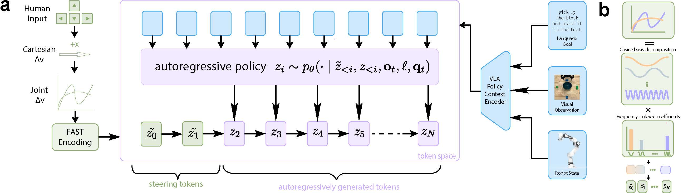
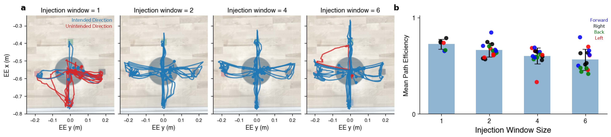
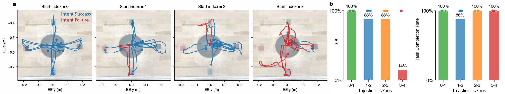
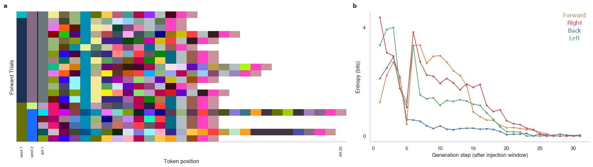
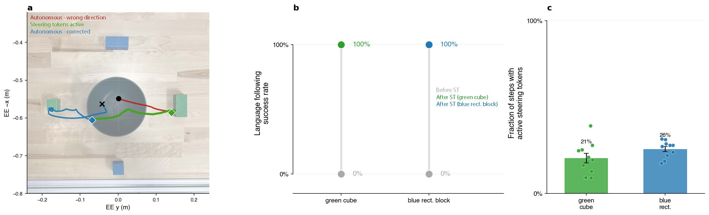

We present Token Steering (TS), a method for dynamically steering trajectories generated by an autoregressive vision-language-action (VLA) model through direct intervention in the action-token space. TS injects low-dimensional user inputs into the model's native action-token representation, allowing users to influence trajectory generation without modifying the underlying vision-language model (VLM) architecture.
Because TS operates entirely at inference time, it requires no additional training or finetuning. User inputs guide rather than override the pretrained policy, preserving the dexterity, smoothness, and task priors learned by the VLA.
We evaluate TS on two household manipulation tasks — drawer closing after object placement and state-aware object swapping — and improve success rates from 10.0% to 72.5% and from 16.7% to 93.8%, respectively. By enabling lightweight, intuitive steering over robot foundation models, our interface has the potential to improve human-robot interaction in consumer environments and broaden accessibility for individuals with limited physical control.
Token Steering exploits the discrete autoregressive structure of frequency-domain (FAST) action tokenization. Rather than replacing robot trajectories through low-level control, TS injects user-generated steering tokens into the beginning of the autoregressive action sequence. The policy then autoregressively completes the remaining trajectory conditioned on the modified prefix — preserving smoothness, task consistency, and environmental adaptation.

Figure 1. (a) A low-dimensional user input (keyboard arrow key) is converted to Cartesian velocity, transformed to joint velocity via inverse kinematics, FAST-tokenized, and injected as a prefix into the VLA's autoregressive action-token buffer. The policy autoregressively generates the remaining tokens conditioned on the modified prefix, visual observations, language instruction, and robot state. (b) FAST tokenization orders DCT coefficients from low to high frequency — early tokens encode coarse trajectory structure; later tokens refine fine motion details.
A keyboard direction encodes a 6-DOF intent vector u ∈ ℝ⁶, scaled to a Cartesian velocity v = mu.
Cartesian velocity → joint velocity via inverse kinematics → padded to action horizon H → FAST-encoded into discrete steering tokens z̃1:K.
Only a small window of tokens [b, b+w) is replaced with steering tokens. The VLA autoregressively generates the rest — on-distribution and task-consistent.
Four properties of Token Steering, each validated experimentally.
We swept injection window size w ∈ {1, 2, 4, 6} on a directionally ambiguous block-selection task. A single token (w=1) fails to communicate direction — the SIR is only 38%. Window size w=2 achieves SIR=1.00 with the best path efficiency. Larger windows over-constrain the policy, causing overshooting and reduced MPE.
Insight: small injection windows preserve the policy's role in refining high-order motion while still reliably communicating coarse intent.

End-effector trajectories (left) and mean path efficiency (right) across injection window sizes. Blue = intended direction; red = unintended.
FAST orders tokens from low to high frequency. We fixed w=2 and swept start index b ∈ {0,1,2,3}. Injecting at the lowest frequencies (b=0) achieves 100% steering intent success. As b increases toward higher-frequency tokens, SIR degrades to 12% — the steering input is absorbed into local refinements and ignored.
Insight: coarse trajectory semantics are encoded at the very beginning of the FAST token sequence, making the first two tokens the most impactful target for user steering.

Trajectories and steering intent rate vs. injection start index. Steering is most effective at low-frequency token positions (b=0).
A concern with out-of-distribution token injection is that it might cause the policy to generate degenerate or repetitive trajectories. We injected 2 steering tokens across 20 random scenes (80 trials) and measured downstream token entropy.
While entropy dips at the 3rd token (immediately after injection), it quickly recovers to high values, and downstream token sequences remain visually diverse across scenes. TS biases trajectory generation without collapsing the policy's autonomous adaptability.

(Left) Diverse autoregressive token sequences after identical steering-token prefixes across 20 random scenes. (Right) Token entropy recovers rapidly after the injection window.
π₀-FAST achieves 0% success on fine-grained language commands ("pick up the green cube" vs. "pick up the blue rectangular block") — always picking the wrong object due to language grounding failures.
By injecting steering tokens toward the correct object during roll-out, TS achieves 100% task success on both failure cases, using steering tokens for less than 25% of total trajectory tokens. The policy autonomously handles the remaining dexterous manipulation — pick, grasp, and place.

(a) Example corrected trajectory. (b) Success rates before and after TS — 0% → 100%. (c) Steering tokens used for <25% of trajectory.
Seven users completed two household manipulation tasks on a DROID robot (Franka Panda arm + Robotiq 2F-85 gripper) running π₀-FAST zero-shot. Users steered via keyboard inputs — injecting 4-token windows at 0.5 m/s Cartesian velocity. All experiments were IRB-approved.
| Task | Success Rate | Median Time (s) | p-value |
|---|---|---|---|
| Drawer — Autonomous | 10.0% | 74.0 | 0.003 |
| Drawer — Token Steering | 72.5% | 42.0 | |
| Sponge Swap — Autonomous | 16.7% | — | <0.001 |
| Sponge Swap — Token Steering | 93.8% | 133.8 |
Wilcoxon rank-sum tests; success rates (%) and median completion times (s).
Users pick up a toy banana and place it into an open drawer, then close the drawer by sliding it shut. The autonomous baseline achieves only 10% success — common failures include pushing the drawer from suboptimal angles (causing jamming) and losing the drawer entirely.
With Token Steering, users quickly navigate the gripper into an optimal position behind the drawer and prompt it forward to close gently. Crucially, the policy generates smooth, force-appropriate closing motions — simple keyboard inputs would push too harshly on their own. Success improves from 10% → 72.5%; median completion time drops from 74s → 42s (p=0.003).
Autonomous — 10% success
With Token Steering — 72.5% success
Three plates are arranged in a row; a blue and orange sponge must be swapped using the empty plate as temporary storage. This requires memory of past actions — something π₀-FAST fundamentally lacks, as it has no memory across action chunks.
The autonomous policy achieves 0% full task success (16.7% partial progress). With Token Steering, users maintain the high-level plan (which sponge goes where) while the policy handles all low-level dexterity — grasping, placing, recovering dropped objects. Users achieve 93.8% success (p<0.001), completing a task the autonomous VLA cannot do at all.
Autonomous — 0% full success
With Token Steering — 93.8% success
Autoregressive VLAs unify visual, language, proprioceptive, and action representations into a single token-based architecture. We find that injecting a steering signal in this native token space provides an intuitive interface for users to exert directional influence on an autonomous trajectory. Because TS operates zero-shot at inference time, it applies across tasks without collecting new data or finetuning the policy.
Although we use keyboard inputs, TS does not depend on keyboards. Any low-dimensional intent signal that can map to a velocity command — including brain-computer interfaces (BCIs), sip-and-puff devices, or eye gaze — could generate steering tokens. This makes TS especially relevant for broadening accessibility in assistive robotics, where high-dimensional continuous control is often infeasible for users with limited physical capacity.
Limitations. Autoregressive steering is naturally slower than flow- or diffusion-based VLAs due to next-token prediction latency. In tasks requiring rapid or time-critical manipulation, flow-based VLAs may be preferable. Improving inference speed for autoregressive VLAs remains an open problem, though hardware improvements will likely address this over time.
Autoregressive VLAs. Token Steering is built on π₀-FAST (Pertsch et al., 2025), which represents action trajectories in the frequency domain via FAST tokenization. Related autoregressive VLAs include RT-1, RT-2, and OpenVLA. Experiments use the DROID robot platform (Khazatsky et al., 2025).
Diffusion Policy Steering. Methods like DSRL, DiSCo, and DynaGuide steer diffusion policies by intervening on the denoising process. TS targets autoregressive VLAs and directly edits the discrete token stream — requiring no retraining, auxiliary objective, or learned correction module.
Shared Autonomy. Classical shared autonomy blends human and robot control through arbitration mechanisms. TS differs in both representation and mechanism: user inputs are converted into the same tokenized action representation used internally by the policy, enabling lightweight inference-time steering without overriding the VLA.
@article{tokensteering2026,
title = {Steering Autoregressive Vision-Language-Action Policies
via Action Token Intervention},
author = {Chan, Jason and Kao, Jonathan C.},
year = {2026}
}